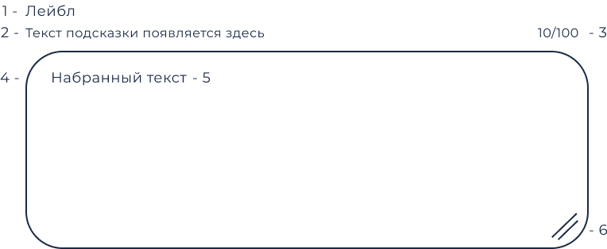

Текстовые поля играют важную роль, позволяя пользователям вести дневник ощущений, выражать эмоции и отслеживать свой путь к благополучию. Эти поля создают пространство для самовыражения и рефлексии, способствуя психологической разгрузке и осознанности.
@@include('./blocks/nav.html')
Текстовые поля
Текстовые поля позволяют пользователям вводить текст в интерфейс. Компонент текстового поля должен обеспечивать четкую возможность взаимодействия, делая поля обнаруживаемыми в приложении, эффективными для заполнения и доступными.
Строение компонента

Номер элемента
Значение
1
Лейбл. Используется для описания поля.
2
Вспомогательное описание. Описание должно начинается с глагола. Не используйте вспомогательное описание, если информации в плейсхолдере достаточно для заполнения поля и ее не требуется отображать при вводе.
3
Счетчик. Показывает количество введенных пользователем символов и максимальное количество, которое допустимо для ввода в это поле.
4
Плейсхолдер. Текстовый контент, заполняющий временно пустое поле, с целью привлечения внимания пользователя к данному элементу.
5
Поле ввода.
6
Нативная кнопка масштабирования. Браузерный нативный элемент, позволяющий пользователю масштабировать размер поля ввода.